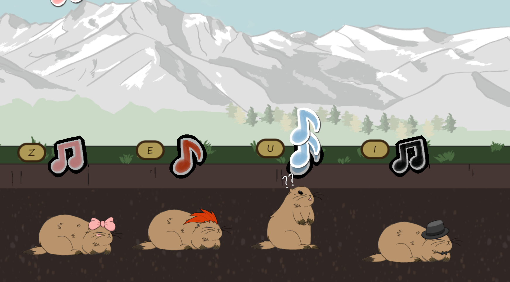

Marmonie is a rhythm game where you wake up marmots during their winter sleep (it is needed for them to have a good hibernation). It was made for the Scientific Game Jam de Lyon 2026. The themes of this jam are based on a scientist's PhD.
(Only playable in French)
